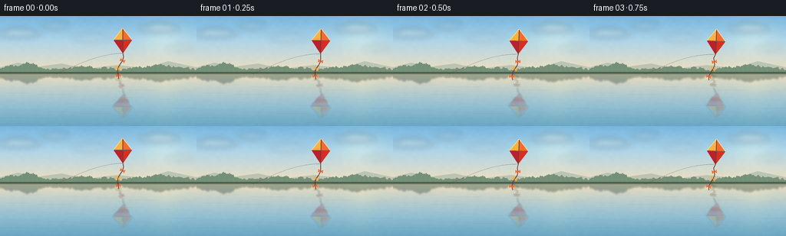
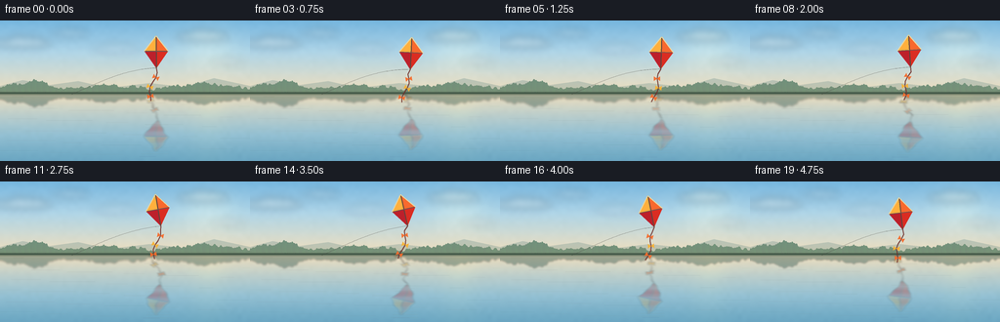

CODING AGENTS AS PIXEL WORLD MODELS
traex/GPT-5.6-Sol · phygen_057
点击播放 · 原生 RGB 像素
逐轮保存的候选
回放视频、检查图与代码变化。
每份候选均可单独播放。实际图片检查记录在下方工具轨迹中。
候选 01播放与检查图
点击播放 · 原生 RGB 像素


展开代码变化
--- 上一保存版本
+++ 本次保存版本
@@ -0,0 +1,252 @@
+from pathlib import Path
+import math
+import numpy as np
+import cv2
+from PIL import Image, ImageDraw, ImageFilter
+import artifact_io
+
+# Procedural, deterministic, supersampled landscape animation.
+W, H, N = 256, 144, 20
+S = 4
+WW, HH = W*S, H*S
+HORIZON = 75*S
+rng = np.random.default_rng(5709)
+
+# Static film-like texture and low frequency variation (kept fixed to avoid temporal noise).
+small = rng.normal(0, 1, (36, 64)).astype(np.float32)
+low_noise = cv2.resize(small, (WW, HH), interpolation=cv2.INTER_CUBIC)
+fine_noise = rng.normal(0, 1, (HH, WW)).astype(np.float32)
+
+
+def rgba_comp(base, layer):
+ """Alpha composite uint8 BGRA-ish ndarray layer (actually RGBA) onto RGB base."""
+ a = layer[..., 3:4].astype(np.float32) / 255.0
+ return np.clip(layer[..., :3].astype(np.float32)*a + base.astype(np.float32)*(1-a), 0, 255).astype(np.uint8)
+
+
+def make_cloud_layer(shift):
+ im = Image.new('RGBA', (WW, HH), (0,0,0,0))
+ d = ImageDraw.Draw(im, 'RGBA')
+ # Broad, translucent painterly clouds, all well behind the kite.
+ clouds = [
+ (24, 23, 29, 7, (255,249,238,60)),
+ (72, 13, 19, 5, (255,253,246,44)),
+ (120, 29, 26, 6, (244,242,238,30)),
+ (208, 16, 27, 7, (255,247,223,54)),
+ (235, 42, 18, 5, (232,236,235,27)),
+ ]
+ for cx,cy,rx,ry,col in clouds:
+ cx = (cx + shift)*S
+ cy *= S; rx*=S; ry*=S
+ # overlapping elliptical lobes
+ d.ellipse((cx-rx,cy-ry*.55,cx+rx,cy+ry*.65), fill=col)
+ d.ellipse((cx-rx*.45,cy-ry,cx+rx*.25,cy+ry*.45), fill=col)
+ d.ellipse((cx+rx*.05,cy-ry*.8,cx+rx*.68,cy+ry*.4), fill=col)
+ return np.asarray(im.filter(ImageFilter.GaussianBlur(3.8*S)))
+
+# Stable irregular distant shoreline geometry.
+tree_x = np.arange(-5, 262, 2.1)
+tree_top = (69.7 - 2.0*np.sin(tree_x*.071) - 1.0*np.sin(tree_x*.19)
+ - rng.uniform(0.0, 2.8, tree_x.size))
+# A couple taller groves to give natural asymmetry.
+tree_top -= 4.7*np.exp(-((tree_x-37)/15)**2) + 3.0*np.exp(-((tree_x-224)/20)**2)
+
+
+def draw_background(frame_index):
+ t = frame_index/(N-1)
+ arr = np.zeros((HH,WW,3), dtype=np.float32)
+ # Pastel late-afternoon sky gradient.
+ sky_stops = [(0,(119,181,220)), (.43,(174,211,229)), (1,(239,221,188))]
+ for y in range(HORIZON+1):
+ q=y/max(1,HORIZON)
+ if q<.43:
+ u=q/.43; a,b=sky_stops[0][1],sky_stops[1][1]
+ else:
+ u=(q-.43)/.57; a,b=sky_stops[1][1],sky_stops[2][1]
+ arr[y,:, :] = np.array(a)*(1-u)+np.array(b)*u
+ # Water: vertically mirrored sky, slightly cooler/deeper toward viewer.
+ for y in range(HORIZON,HH):
+ depth=(y-HORIZON)/(HH-HORIZON)
+ sy=max(0, 2*HORIZON-y)
+ src=arr[sy,0,:]
+ cool=np.array((87,145,164))
+ arr[y,:,:]=src*(1-.50*depth)+cool*(.50*depth)
+ # Warm reflected glow from the sun, diffuse not a hard disk.
+ yy,xx=np.mgrid[0:HH,0:WW]
+ sunx,suny=214*S,27*S
+ glow=np.exp(-(((xx-sunx)/(29*S))**2+((yy-suny)/(25*S))**2))*21
+ arr[:HORIZON,:,0]+=glow[:HORIZON]
+ arr[:HORIZON,:,1]+=glow[:HORIZON]*.62
+ arr[:HORIZON,:,2]+=glow[:HORIZON]*.10
+ # Water's warm vertical glow is subtle and broadened near foreground.
+ mask=yy>=HORIZON
+ wg=np.exp(-((xx-sunx)/(17*S + .055*(yy-HORIZON)))**2)*np.exp(-(yy-HORIZON)/(55*S))*12
+ arr[...,0]+=wg*mask; arr[...,1]+=wg*.70*mask
+ # Fixed organic texture.
+ arr += low_noise[...,None]*0.72 + fine_noise[...,None]*0.22
+ arr=np.clip(arr,0,255).astype(np.uint8)
+ arr=rgba_comp(arr, make_cloud_layer(-.6 + 1.2*t))
+
+ # Shore and trees, tiny but recognizable.
+ land=Image.new('RGBA',(WW,HH),(0,0,0,0)); d=ImageDraw.Draw(land,'RGBA')
+ # distant low hill haze
+ d.polygon([(0,71*S),(0,67*S),(23*S,61*S),(51*S,66*S),(80*S,62*S),(111*S,69*S),
+ (153*S,64*S),(189*S,68*S),(219*S,59*S),(WW,67*S),(WW,76*S)], fill=(91,132,128,70))
+ pts=[(int(x*S),int(y*S)) for x,y in zip(tree_x,tree_top)]
+ pts += [(WW,76*S),(0,76*S)]
+ d.polygon(pts, fill=(43,88,77,230))
+ # Individual tree crowns and a narrow warm shoreline.
+ for i,(x,y) in enumerate(zip(tree_x,tree_top)):
+ r=(1.5 + .65*((i*7)%5)/4)*S
+ d.ellipse((x*S-r, y*S-.35*r, x*S+r, 74*S), fill=(47,94+int(i%3)*3,76,155))
+ d.rectangle((0,73.6*S,WW,76.0*S), fill=(58,84,66,220))
+ d.line((0,75.3*S,WW,75.3*S), fill=(232,207,160,95), width=max(1,S//2))
+ arr=rgba_comp(arr,np.asarray(land))
+
+ # Dark, soft reflection of the far shoreline.
+ refl=Image.new('RGBA',(WW,HH),(0,0,0,0)); dr=ImageDraw.Draw(refl,'RGBA')
+ rpts=[(int(x*S),int((150-y)*S)) for x,y in zip(tree_x,tree_top)]
+ rpts += [(WW,74*S),(0,74*S)]
+ dr.polygon(rpts, fill=(37,78,70,100))
+ refl=np.asarray(refl.filter(ImageFilter.GaussianBlur((1.0+.2*math.sin(frame_index*.25))*S)))
+ arr=rgba_comp(arr,refl)
+
+ # Long, calm horizontal ripples and sky streaks.
+ overlay=Image.new('RGBA',(WW,HH),(0,0,0,0)); ro=ImageDraw.Draw(overlay,'RGBA')
+ phase=frame_index*.23
+ for j in range(31):
+ y=(78 + j*2.05 + .35*math.sin(j*.83+phase))*S
+ length=(11 + (j*17)%42)*S
+ x=((j*47 + 18 + 2.0*math.sin(phase+j))%255)*S
+ col=(224,235,225,12 + (j%4)*4) if j%3 else (37,92,106,12)
+ ro.line((x-length*.5,y,x+length*.5,y), fill=col, width=1 if S<4 else 2)
+ # subtle bright horizon seam
+ ro.line((0,76.4*S,WW,76.4*S),fill=(246,226,187,58),width=1*S)
+ arr=rgba_comp(arr,np.asarray(overlay.filter(ImageFilter.GaussianBlur(.22*S))))
+ return arr
+
+
+def kite_geometry(fi):
+ # Gentle coherent soaring path and bank.
+ a=2*math.pi*fi/N
+ cx=(160 + 5.3*math.sin(a*.86) + 1.2*math.sin(a*2.0))*S
+ cy=(30.5 + 2.3*math.sin(a*1.12+.35))*S
+ ang=math.radians(-5 + 7.5*math.sin(a*.9+.7))
+ return cx,cy,ang
+
+
+def rotpt(cx,cy,ang,x,y):
+ return (cx + (x*math.cos(ang)-y*math.sin(ang))*S,
+ cy + (x*math.sin(ang)+y*math.cos(ang))*S)
+
+
+def draw_kite_layer(fi):
+ im=Image.new('RGBA',(WW,HH),(0,0,0,0)); d=ImageDraw.Draw(im,'RGBA')
+ cx,cy,ang=kite_geometry(fi)
+ top=rotpt(cx,cy,ang,0,-15.5); right=rotpt(cx,cy,ang,12.2,0)
+ bot=rotpt(cx,cy,ang,0,17.5); left=rotpt(cx,cy,ang,-12.2,0)
+ center=rotpt(cx,cy,ang,0,0)
+ # Very soft shadow rim then colored triangular sail panels.
+ d.polygon([top,right,bot,left], fill=(38,42,39,230), outline=(31,45,47,255), width=2*S)
+ d.polygon([top,right,center], fill=(246,106,48,255))
+ d.polygon([right,bot,center], fill=(216,47,37,255))
+ d.polygon([bot,left,center], fill=(187,35,46,255))
+ d.polygon([left,top,center], fill=(255,175,63,255))
+ # spars and highlighted leading edge
+ d.line([top,bot], fill=(74,47,35,215), width=max(2,1*S))
+ d.line([left,right], fill=(91,47,34,190), width=max(2,1*S))
+ d.line([left,top,right], fill=(255,218,142,185), width=max(2,1*S))
+ # Draw fluttering tail as a smooth polyline from the lower corner.
+ points=[bot]
+ a=2*math.pi*fi/N
+ for k in range(1,8):
+ yy=k*5.0
+ # wind blows tail down-left with a traveling wave
+ x=-1.3*k + 2.2*math.sin(k*1.15-a*2.1)*(k/7)**.45
+ points.append(rotpt(bot[0],bot[1],0,x,yy)) # bot already pixels, use direct below instead
+ # Correct points: local displacements in screen pixels, naturally more vertical than sail rotation.
+ points=[bot]
+ for k in range(1,8):
+ dx=(-1.12*k + 2.15*math.sin(k*1.10-a*2.0))*S
+ dy=(k*4.8)*S
+ points.append((bot[0]+dx,bot[1]+dy))
+ d.line(points, fill=(112,53,48,235), width=max(2,S), joint='curve')
+ # Bows on tail.
+ for k in (2,4,6):
+ px,py=points[k]
+ tangent=np.array(points[min(k+1,7)])-np.array(points[max(k-1,0)])
+ norm=np.array([-tangent[1],tangent[0]],dtype=float); norm/=np.linalg.norm(norm)+1e-6
+ tang=tangent/(np.linalg.norm(tangent)+1e-6)
+ n=3.1*S; q=2.3*S
+ p=np.array([px,py])
+ bow1=[tuple(p),tuple(p+norm*n-tang*q),tuple(p+norm*n+tang*q)]
+ bow2=[tuple(p),tuple(p-norm*n-tang*q),tuple(p-norm*n+tang*q)]
+ color=(243,109,47,245) if k!=4 else (246,177,55,245)
+ d.polygon(bow1,fill=color); d.polygon(bow2,fill=color)
+ return np.asarray(im), bot
+
+
+def draw_string(base, fi, kite_bottom):
+ # Fine taut string curving toward an unseen flyer at the near left bank.
+ overlay=Image.new('RGBA',(WW,HH),(0,0,0,0)); d=ImageDraw.Draw(overlay,'RGBA')
+ bx,by=kite_bottom
+ # cubic Bezier sample, endpoint near left edge at shore
+ p0=np.array([bx,by]); p1=np.array([126*S,50*S]); p2=np.array([99*S,65*S]); p3=np.array([73*S,76*S])
+ pts=[]
+ for u in np.linspace(0,1,80):
+ p=(1-u)**3*p0+3*(1-u)**2*u*p1+3*(1-u)*u*u*p2+u**3*p3
+ pts.append(tuple(p))
+ d.line(pts,fill=(70,70,64,145),width=max(1,S//2))
+ return rgba_comp(base,np.asarray(overlay))
+
+
+def reflection_from_layer(layer, fi):
+ # Geometric mirror about the waterline, horizontally distorted by tiny ripples.
+ yy,xx=np.mgrid[0:HH,0:WW].astype(np.float32)
+ depth=np.maximum(0,yy-HORIZON)
+ phase=fi*.28
+ offset=(1.1*S*np.sin(depth/(3.7*S)+phase) + .45*S*np.sin(depth/(1.35*S)-phase*.6))*(depth>0)
+ mapx=xx-offset
+ mapy=2*HORIZON-yy
+ out=cv2.remap(layer,mapx,mapy,cv2.INTER_LINEAR,borderMode=cv2.BORDER_CONSTANT,borderValue=0)
+ out[:HORIZON]=0
+ # reflection becomes softer, dimmer, and intermittently broken with depth
+ out=cv2.GaussianBlur(out,(0,0),sigmaX=1.15*S,sigmaY=.28*S)
+ fade=np.clip(0.58 - depth/(165*S),0,.58)
+ bands=.78+.20*np.sin(depth/(1.75*S)+phase)
+ out[...,3]=(out[...,3].astype(np.float32)*fade*bands).astype(np.uint8)
+ # Cool tint while retaining unmistakable kite color.
+ rgb=out[...,:3].astype(np.float32)
+ rgb=rgb*.82+np.array([44,78,88],dtype=np.float32)*.18
+ out[...,:3]=np.clip(rgb,0,255).astype(np.uint8)
+ return out
+
+
+def render(fi):
+ arr=draw_background(fi)
+ kite,bot=draw_kite_layer(fi)
+ # Reflection must sit in the water before the real sky object/string.
+ arr=rgba_comp(arr,reflection_from_layer(kite,fi))
+ arr=draw_string(arr,fi,bot)
+ arr=rgba_comp(arr,kite)
+ # Add a handful of thin specular ripple strokes across/around reflection.
+ ov=Image.new('RGBA',(WW,HH),(0,0,0,0)); d=ImageDraw.Draw(ov,'RGBA')
+ cx,cy,_=kite_geometry(fi); refy=2*HORIZON-cy
+ for j in range(-4,7):
+ y=refy+j*3.0*S
+ half=(5.5+abs(j)*1.4)*S
+ x=cx+math.sin(j*.9+fi*.25)*1.5*S
+ d.line((x-half,y,x+half,y),fill=(214,223,207,22 if j else 38),width=max(1,S//2))
+ arr=rgba_comp(arr,np.asarray(ov.filter(ImageFilter.GaussianBlur(.18*S))))
+ # Downsample with Lanczos for antialiasing and finish with very light contrast.
+ out=np.asarray(Image.fromarray(arr).resize((W,H),Image.Resampling.LANCZOS)).astype(np.float32)
+ out=(out-128)*1.025+128
+ return np.clip(out,0,255).astype(np.uint8)
+
+
+def main():
+ frames=np.stack([render(i) for i in range(N)],axis=0)
+ artifact_io.save(frames,Path(__file__).resolve().parent)
+
+if __name__=='__main__':
+ main()
可观测工具轨迹
实际执行的命令与返回图片。
命令 1exit 0
/bin/bash -lc "cat prompt.txt && printf '\\n---RULES---\\n' && cat GENERATION_RULES.md && printf '\\n---SPEC---\\n' && cat task_spec.json"
命令 2exit 0
/bin/bash -lc "find . -maxdepth 2 -type f -printf '%p\\n' | sort | head -200"
命令 3exit 0
/bin/bash -lc "which ffmpeg; which python3; python3 - <<'PY' mods=['PIL','numpy','cv2','imageio','moviepy','cairo'] for m in mods: try: __import__(m); print(m,'yes') except Exception as e: print(m,'no',type(e).__name__) PY"
命令 4exit 0
/bin/bash -lc 'cat artifact_io.py'
命令 5exit 0
/bin/bash -lc "cat > generate.py <<'PY'
from pathlib import Path
import math
import numpy as np
import cv2
from PIL import Image, ImageDraw, ImageFilter
import artifact_io
# Procedural, deterministic, supersampled landscape animation.
W, H, N = 256, 144, 20
S = 4
WW, HH = W*S, H*S
HORIZON = 75*S
rng = np.random.default_rng(5709)
# Static film-like texture and low frequency variation (kept fixed to avoid temporal noise).
small = rng.normal(0, 1, (36, 64)).astype(np.float32)
low_noise = cv2.resize(small, (WW, HH), interpolation=cv2.INTER_CUBIC)
fine_noise = rng.normal(0, 1, (HH, WW)).astype(np.float32)
def rgba_comp(base, layer):
\"\"\"Alpha composite uint8 BGRA-ish ndarray layer (actually RGBA) onto RGB base.\"\"\"
a = layer[..., 3:4].astype(np.float32) / 255.0
return np.clip(layer[..., :3].astype(np.float32)*a + base.astype(np.float32)*(1-a), 0, 255).astype(np.uint8)
def make_cloud_layer(shift):
im = Image.new('RGBA', (WW, HH), (0,0,0,0))
d = ImageDraw.Draw(im, 'RGBA')
# Broad, translucent painterly clouds, all well behind the kite.
clouds = [
(24, 23, 29, 7, (255,249,238,60)),
(72, 13, 19, 5, (255,253,246,44)),
(120, 29, 26, 6, (244,242,238,30)),
(208, 16, 27, 7, (255,247,223,54)),
(235, 42, 18, 5, (232,236,235,27)),
]
for cx,cy,rx,ry,col in clouds:
cx = (cx + shift)*S
cy *= S; rx*=S; ry*=S
# overlapping elliptical lobes
d.ellipse((cx-rx,cy-ry*.55,cx+rx,cy+ry*.65), fill=col)
d.ellipse((cx-rx*.45,cy-ry,cx+rx*.25,cy+ry*.45), fill=col)
d.ellipse((cx+rx*.05,cy-ry*.8,cx+rx*.68,cy+ry*.4), fill=col)
return np.asarray(im.filter(ImageFilter.GaussianBlur(3.8*S)))
# Stable irregular distant shoreline geometry.
tree_x = np.arange(-5, 262, 2.1)
tree_top = (69.7 - 2.0*np.sin(tree_x*.071) - 1.0*np.sin(tree_x*.19)
- rng.uniform(0.0, 2.8, tree_x.size))
# A couple taller groves to give natural asymmetry.
tree_top -= 4.7*np.exp(-((tree_x-37)/15)**2) + 3.0*np.exp(-((tree_x-224)/20)**2)
def draw_background(frame_index):
t = frame_index/(N-1)
arr = np.zeros((HH,WW,3), dtype=np.float32)
# Pastel late-afternoon sky gradient.
sky_stops = [(0,(119,181,220)), (.43,(174,211,229)), (1,(239,221,188))]
for y in range(HORIZON+1):
q=y/max(1,HORIZON)
if q<.43:
u=q/.43; a,b=sky_stops[0][1],sky_stops[1][1]
else:
u=(q-.43)/.57; a,b=sky_stops[1][1],sky_stops[2][1]
arr[y,:, :] = np.array(a)*(1-u)+np.array(b)*u
# Water: vertically mirrored sky, slightly cooler/deeper toward viewer.
for y in range(HORIZON,HH):
depth=(y-HORIZON)/(HH-HORIZON)
sy=max(0, 2*HORIZON-y)
src=arr[sy,0,:]
cool=np.array((87,145,164))
arr[y,:,:]=src*(1-.50*depth)+cool*(.50*depth)
# Warm reflected glow from the sun, diffuse not a hard disk.
yy,xx=np.mgrid[0:HH,0:WW]
sunx,suny=214*S,27*S
glow=np.exp(-(((xx-sunx)/(29*S))**2+((yy-suny)/(25*S))**2))*21
arr[:HORIZON,:,0]+=glow[:HORIZON]
arr[:HORIZON,:,1]+=glow[:HORIZON]*.62
arr[:HORIZON,:,2]+=glow[:HORIZON]*.10
# Water's warm vertical glow is subtle and broadened near foreground.
mask=yy>=HORIZON
wg=np.exp(-((xx-sunx)/(17*S + .055*(yy-HORIZON)))**2)*np.exp(-(yy-HORIZON)/(55*S))*12
arr[...,0]+=wg*mask; arr[...,1]+=wg*.70*mask
# Fixed organic texture.
arr += low_noise[...,None]*0.72 + fine_noise[...,None]*0.22
arr=np.clip(arr,0,255).astype(np.uint8)
arr=rgba_comp(arr, make_cloud_layer(-.6 + 1.2*t))
# Shore and trees, tiny but recognizable.
land=Image.new('RGBA',(WW,HH),(0,0,0,0)); d=ImageDraw.Draw(land,'RGBA')
# distant low hill haze
d.polygon([(0,71*S),(0,67*S),(23*S,61*S),(51*S,66*S),(80*S,62*S),(111*S,69*S),
(153*S,64*S),(189*S,68*S),(219*S,59*S),(WW,67*S),(WW,76*S)], fill=(91,132,128,70))
pts=[(int(x*S),int(y*S)) for x,y in zip(tree_x,tree_top)]
pts += [(WW,76*S),(0,76*S)]
d.polygon(pts, fill=(43,88,77,230))
# Individual tree crowns and a narrow warm shoreline.
for i,(x,y) in enumerate(zip(tree_x,tree_top)):
r=(1.5 + .65*((i*7)%5)/4)*S
d.ellipse((x*S-r, y*S-.35*r, x*S+r, 74*S), fill=(47,94+int(i%3)*3,76,155))
d.rectangle((0,73.6*S,WW,76.0*S), fill=(58,84,66,220))
d.line((0,75.3*S,WW,75.3*S), fill=(232,207,160,95), width=max(1,S//2))
arr=rgba_comp(arr,np.asarray(land))
# Dark, soft reflection of the far shoreline.
refl=Image.new('RGBA',(WW,HH),(0,0,0,0)); dr=ImageDraw.Draw(refl,'RGBA')
rpts=[(int(x*S),int((150-y)*S)) for x,y in zip(tree_x,tree_top)]
rpts += [(WW,74*S),(0,74*S)]
dr.polygon(rpts, fill=(37,78,70,100))
refl=np.asarray(refl.filter(ImageFilter.GaussianBlur((1.0+.2*math.sin(frame_index*.25))*S)))
arr=rgba_comp(arr,refl)
# Long, calm horizontal ripples and sky streaks.
overlay=Image.new('RGBA',(WW,HH),(0,0,0,0)); ro=ImageDraw.Draw(overlay,'RGBA')
phase=frame_index*.23
for j in range(31):
y=(78 + j*2.05 + .35*math.sin(j*.83+phase))*S
length=(11 + (j*17)%42)*S
x=((j*47 + 18 + 2.0*math.sin(phase+j))%255)*S
col=(224,235,225,12 + (j%4)*4) if j%3 else (37,92,106,12)
ro.line((x-length*.5,y,x+length*.5,y), fill=col, width=1 if S<4 else 2)
# subtle bright horizon seam
ro.line((0,76.4*S,WW,76.4*S),fill=(246,226,187,58),width=1*S)
arr=rgba_comp(arr,np.asarray(overlay.filter(ImageFilter.GaussianBlur(.22*S))))
return arr
def kite_geometry(fi):
# Gentle coherent soaring path and bank.
a=2*math.pi*fi/N
cx=(160 + 5.3*math.sin(a*.86) + 1.2*math.sin(a*2.0))*S
cy=(30.5 + 2.3*math.sin(a*1.12+.35))*S
ang=math.radians(-5 + 7.5*math.sin(a*.9+.7))
return cx,cy,ang
def rotpt(cx,cy,ang,x,y):
return (cx + (x*math.cos(ang)-y*math.sin(ang))*S,
cy + (x*math.sin(ang)+y*math.cos(ang))*S)
def draw_kite_layer(fi):
im=Image.new('RGBA',(WW,HH),(0,0,0,0)); d=ImageDraw.Draw(im,'RGBA')
cx,cy,ang=kite_geometry(fi)
top=rotpt(cx,cy,ang,0,-15.5); right=rotpt(cx,cy,ang,12.2,0)
bot=rotpt(cx,cy,ang,0,17.5); left=rotpt(cx,cy,ang,-12.2,0)
center=rotpt(cx,cy,ang,0,0)
# Very soft shadow rim then colored triangular sail panels.
d.polygon([top,right,bot,left], fill=(38,42,39,230), outline=(31,45,47,255), width=2*S)
d.polygon([top,right,center], fill=(246,106,48,255))
d.polygon([right,bot,center], fill=(216,47,37,255))
d.polygon([bot,left,center], fill=(187,35,46,255))
d.polygon([left,top,center], fill=(255,175,63,255))
# spars and highlighted leading edge
d.line([top,bot], fill=(74,47,35,215), width=max(2,1*S))
d.line([left,right], fill=(91,47,34,190), width=max(2,1*S))
d.line([left,top,right], fill=(255,218,142,185), width=max(2,1*S))
# Draw fluttering tail as a smooth polyline from the lower corner.
points=[bot]
a=2*math.pi*fi/N
for k in range(1,8):
yy=k*5.0
# wind blows tail down-left with a traveling wave
x=-1.3*k + 2.2*math.sin(k*1.15-a*2.1)*(k/7)**.45
points.append(rotpt(bot[0],bot[1],0,x,yy)) # bot already pixels, use direct below instead
# Correct points: local displacements in screen pixels, naturally more vertical than sail rotation.
points=[bot]
for k in range(1,8):
dx=(-1.12*k + 2.15*math.sin(k*1.10-a*2.0))*S
dy=(k*4.8)*S
points.append((bot[0]+dx,bot[1]+dy))
d.line(points, fill=(112,53,48,235), width=max(2,S), joint='curve')
# Bows on tail.
for k in (2,4,6):
px,py=points[k]
tangent=np.array(points[min(k+1,7)])-np.array(points[max(k-1,0)])
norm=np.array([-tangent[1],tangent[0]],dtype=float); norm/=np.linalg.norm(norm)+1e-6
tang=tangent/(np.linalg.norm(tangent)+1e-6)
n=3.1*S; q=2.3*S
p=np.array([px,py])
bow1=[tuple(p),tuple(p+norm*n-tang*q),tuple(p+norm*n+tang*q)]
bow2=[tuple(p),tuple(p-norm*n-tang*q),tuple(p-norm*n+tang*q)]
color=(243,109,47,245) if k"'!=4 else (246,177,55,245)
d.polygon(bow1,fill=color); d.polygon(bow2,fill=color)
return np.asarray(im), bot
def draw_string(base, fi, kite_bottom):
# Fine taut string curving toward an unseen flyer at the near left bank.
overlay=Image.new('"'RGBA',(WW,HH),(0,0,0,0)); d=ImageDraw.Draw(overlay,'RGBA')
bx,by=kite_bottom
# cubic Bezier sample, endpoint near left edge at shore
p0=np.array([bx,by]); p1=np.array([126*S,50*S]); p2=np.array([99*S,65*S]); p3=np.array([73*S,76*S])
pts=[]
for u in np.linspace(0,1,80):
p=(1-u)**3*p0+3*(1-u)**2*u*p1+3*(1-u)*u*u*p2+u**3*p3
pts.append(tuple(p))
d.line(pts,fill=(70,70,64,145),width=max(1,S//2))
return rgba_comp(base,np.asarray(overlay))
def reflection_from_layer(layer, fi):
# Geometric mirror about the waterline, horizontally distorted by tiny ripples.
yy,xx=np.mgrid[0:HH,0:WW].astype(np.float32)
depth=np.maximum(0,yy-HORIZON)
phase=fi*.28
offset=(1.1*S*np.sin(depth/(3.7*S)+phase) + .45*S*np.sin(depth/(1.35*S)-phase*.6))*(depth>0)
mapx=xx-offset
mapy=2*HORIZON-yy
out=cv2.remap(layer,mapx,mapy,cv2.INTER_LINEAR,borderMode=cv2.BORDER_CONSTANT,borderValue=0)
out[:HORIZON]=0
# reflection becomes softer, dimmer, and intermittently broken with depth
out=cv2.GaussianBlur(out,(0,0),sigmaX=1.15*S,sigmaY=.28*S)
fade=np.clip(0.58 - depth/(165*S),0,.58)
bands=.78+.20*np.sin(depth/(1.75*S)+phase)
out[...,3]=(out[...,3].astype(np.float32)*fade*bands).astype(np.uint8)
# Cool tint while retaining unmistakable kite color.
rgb=out[...,:3].astype(np.float32)
rgb=rgb*.82+np.array([44,78,88],dtype=np.float32)*.18
out[...,:3]=np.clip(rgb,0,255).astype(np.uint8)
return out
def render(fi):
arr=draw_background(fi)
kite,bot=draw_kite_layer(fi)
# Reflection must sit in the water before the real sky object/string.
arr=rgba_comp(arr,reflection_from_layer(kite,fi))
arr=draw_string(arr,fi,bot)
arr=rgba_comp(arr,kite)
# Add a handful of thin specular ripple strokes across/around reflection.
ov=Image.new('RGBA',(WW,HH),(0,0,0,0)); d=ImageDraw.Draw(ov,'RGBA')
cx,cy,_=kite_geometry(fi); refy=2*HORIZON-cy
for j in range(-4,7):
y=refy+j*3.0*S
half=(5.5+abs(j)*1.4)*S
x=cx+math.sin(j*.9+fi*.25)*1.5*S
d.line((x-half,y,x+half,y),fill=(214,223,207,22 if j else 38),width=max(1,S//2))
arr=rgba_comp(arr,np.asarray(ov.filter(ImageFilter.GaussianBlur(.18*S))))
# Downsample with Lanczos for antialiasing and finish with very light contrast.
out=np.asarray(Image.fromarray(arr).resize((W,H),Image.Resampling.LANCZOS)).astype(np.float32)
out=(out-128)*1.025+128
return np.clip(out,0,255).astype(np.uint8)
def main():
frames=np.stack([render(i) for i in range(N)],axis=0)
artifact_io.save(frames,Path(__file__).resolve().parent)
if __name__=='__main__':
main()
PY
python3 generate.py
ls -lh pixels.npz inspection.png frames/00.png"视觉工具实际返回图片 1

视觉工具实际返回图片 2

保存候选 1 份；完成命令 5 次；可验证图片返回 2 张。原始 API 响应与完整日志保留在本地。